Die zentrale Lage des Hotels bringt mit sich, dass wir um 4:00 vom Muezzin geweckt werden, der zum Gebet ruft. Da sich das Hotel zwischen 2 Moscheen befindet, bekommen wir es in Stereophonie.
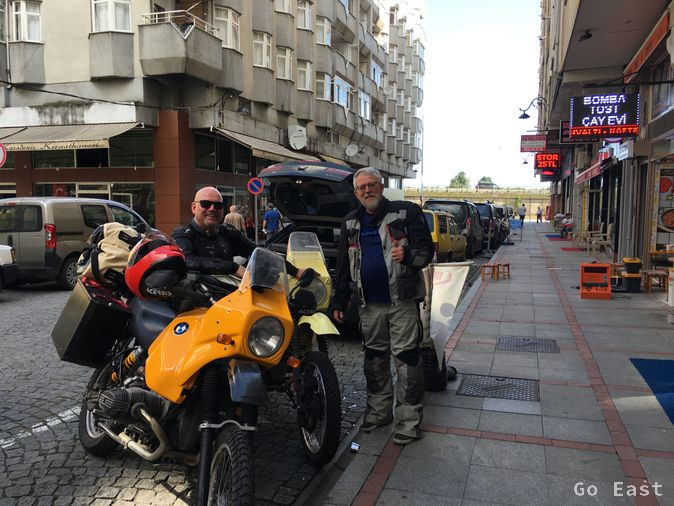
Rize
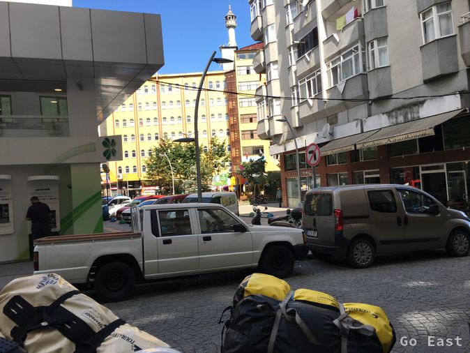
Rize
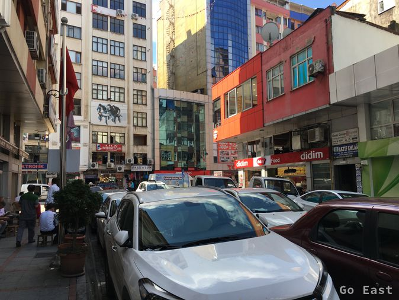
Rize
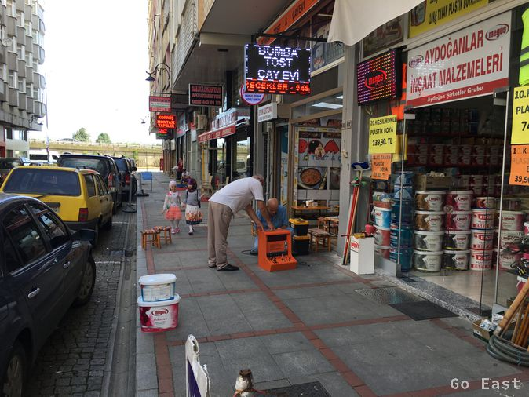
Rize
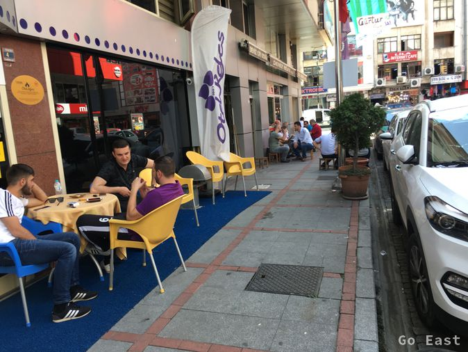
Rize
Wir aktivieren auch die Open Street Map (OSM) Karten auf den Garmin Navis, da die beinhalteten Karten keine weiteren östliche Länder enthalten. Es funktioniert gut mit kleinen Einschränkungen. Besser so, als gar kein Navi.
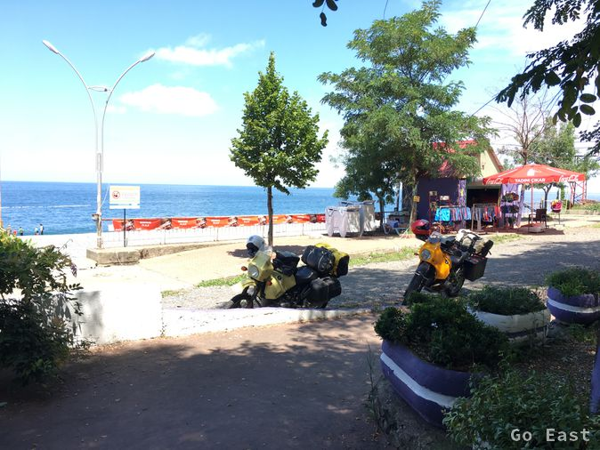
Rast am Schwarzen Meer
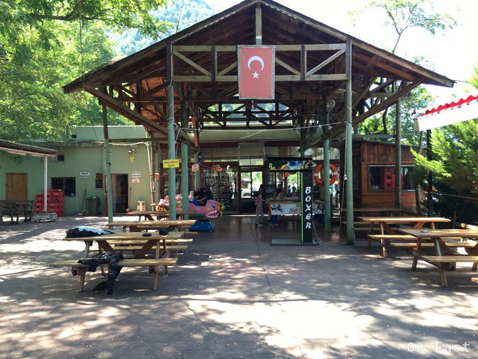
Rast am Schwarzen Meer
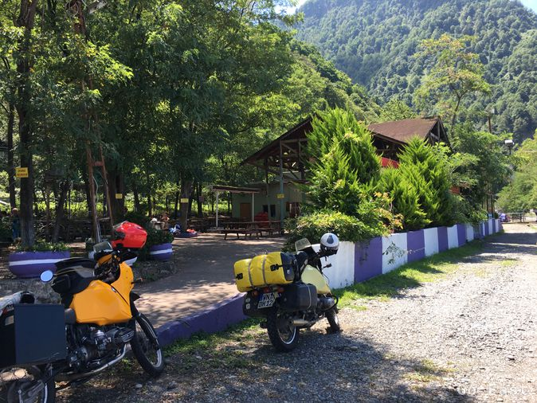
Rast am Schwarzen Meer
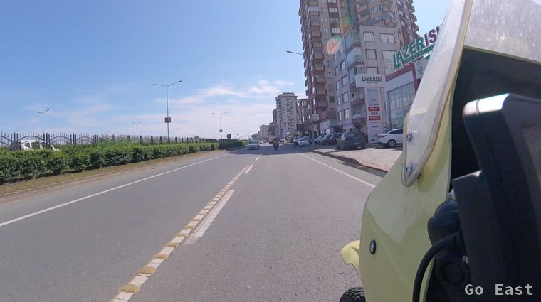
Schwarzmeerküste
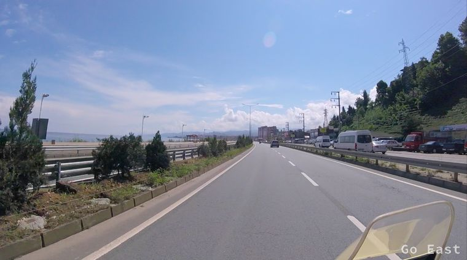
Schwarzmeerküste
Wir fahren kurze Zeit der Schwarzmeerküste entlang und erreichen die Grenze nach Georgien. Die Ausreise geht schnell vonstatten und bei der Einreise nach Georgien drängeln wir uns etwas vor, da wir sicher schon wieder 30+ Grade haben und wir in unserer Motorradkluft vergehen.
In Georgien angekommen haben wir auch eine weitere Zeitzone überschritten und haben nun 2 Stunden Differenz zu Deutschland.
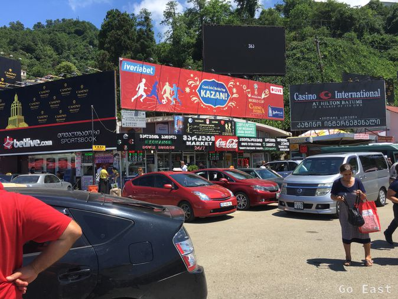
Grenze Georgien
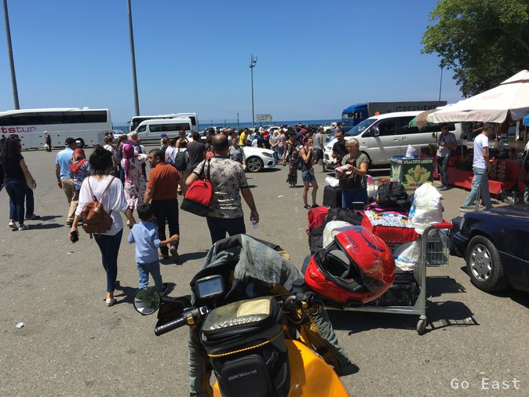
Grenze Georgien
Batumi, das wir nach wenigen Kilometern erreichen scheint das Las Vegas von Geogien zu sein. Überall Werbung für Spielcasinos. Ansonsten betritt man mit Georgien eine anderen Welt, verglichen mit der der Türkei.
Keine roten Fahnen mehr mit Halbmond und Stern, keine Bilder mehr vom Präsidenten, keine Minarets mehr aber viel Schrottplätze, kaputte Straßen und heruntergekommene Häuser.
Hier scheinen sich die Moderne und Relikte aus der Sowjetzeit zu treffen. Neue Luxuskarossen hier und alte Militärfahrzeuge und alte russische Autos da.
In Batumi fällt auf, dass manche Streckenabschnitte der Straße aus großen Platten bestehen, die aus Bitumen-Betonplatten mit Moniereisen zu bestehen scheinen.
Gefährlich dabei ist, dass diese Platten teilweise zerbrochen oder ausgebrochen sind und man durch Löcher fährt in denen auch noch die Eisen stecken. Glücklicherweise ist es trocken und wir müssen nicht auch noch in der Nässe drüber fahren. Auf dem Weg Richtung Poti befinden sich entlang der Straße in den Städten Gasleitungen, die in ca. 3m Höhe montiert sind und so die Versorgung der Haushalte mit Gas gewährleisten. Eine Gasleitung als Hochleitung hatte ich so zuvor auch noch nie gesehen.
Wir biegen vor Poti in Richtung Osten ab und fahren auf guter Straße über Kutaissi, Sestaponi in die Berge Richtung Chaschuri. Die Straße ist sehr kurvig, schön ausgebaut und wir fahren entlang bewaldeter Berge. Nach einem geraden Stück Autobahn erreichen wir Gori, das Ziel für heute.
Das Finden einer Unterkunft gestaltet sich schwierig, da Booking.com für hier nichts bereit hält und auch Google und TripAdvisor Fehlanzeige melden. Durch Fragen von Passanten erreichen wir doch noch ein Hotel, deren einzigste Gäste wir offenbar sind. Im nahegelegenen Restaurant bekommen wir noch Essen und probieren das lokale Bier und den lokalen Wein.
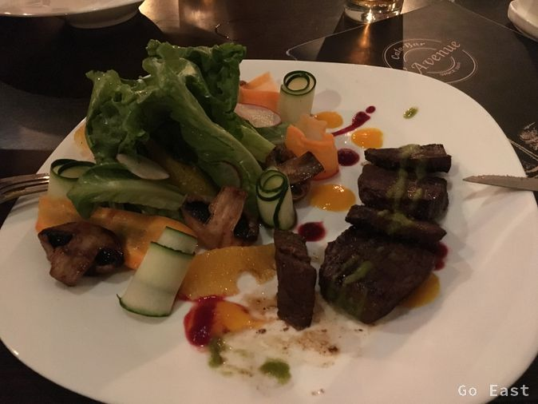
Abendessen in Gori
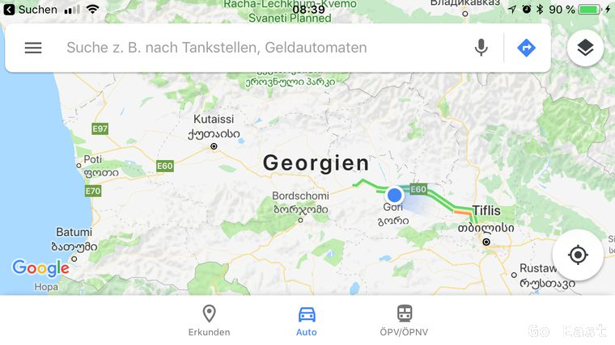
Gori